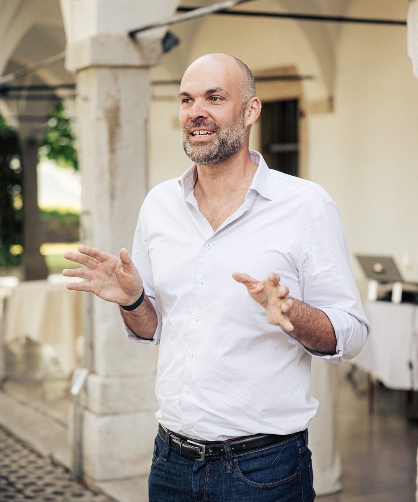

<title>Christian Constant</title>
<meta name="description" content="Christian Constant, executive coach in Zurich. You have made it here. That makes you special already. English, German, French. By referral.">
<link rel="preconnect" href="https://fonts.googleapis.com">
<link rel="stylesheet" href="https://fonts.googleapis.com/css2?family=Newsreader:ital,opsz,wght@0,6..72,400;0,6..72,500;1,6..72,400;1,6..72,500&family=IBM+Plex+Sans:ital,wght@0,400;0,500;1,400&family=IBM+Plex+Mono:wght@400;500&display=swap">
<style>
  :root {
    --bg: #EEF1F3;
    --surface: #FFFFFF;
    --ink: #16191C;
    --ink-2: #3E474F;
    --muted: #6B7680;
    --line: #D4DADF;
    --accent: #1D4F6E;
    --accent-ink: #FFFFFF;
    --user-bg: #E3EAEF;
    --focus: #1D4F6E;
    --display: "Newsreader", "Iowan Old Style", "Palatino Linotype", Georgia, serif;
    --body: "IBM Plex Sans", "Helvetica Neue", Arial, sans-serif;
    --mono: "IBM Plex Mono", "SFMono-Regular", Menlo, Consolas, monospace;
    color-scheme: light;
  }
  @media (prefers-color-scheme: dark) {
    :root:not([data-theme="light"]) {
      --bg: #121517;
      --surface: #1A1E22;
      --ink: #ECEEEF;
      --ink-2: #C3CACF;
      --muted: #8E99A2;
      --line: #2C3338;
      --accent: #8DBBD9;
      --accent-ink: #0F1E29;
      --user-bg: #232A30;
      --focus: #8DBBD9;
      color-scheme: dark;
    }
  }
  :root[data-theme="dark"] {
    --bg: #121517;
    --surface: #1A1E22;
    --ink: #ECEEEF;
    --ink-2: #C3CACF;
    --muted: #8E99A2;
    --line: #2C3338;
    --accent: #8DBBD9;
    --accent-ink: #0F1E29;
    --user-bg: #232A30;
    --focus: #8DBBD9;
    color-scheme: dark;
  }

  * { box-sizing: border-box; }
  html { -webkit-text-size-adjust: 100%; }
  body {
    margin: 0;
    background: var(--bg);
    color: var(--ink);
    font-family: var(--body);
    font-size: 16px;
    line-height: 1.55;
    min-height: 100vh;
    display: flex;
    flex-direction: column;
  }
  a { color: inherit; text-decoration: none; }
  a:hover { text-decoration: underline; text-underline-offset: 3px; }
  :focus-visible { outline: 2px solid var(--focus); outline-offset: 3px; border-radius: 2px; }

  .wrap { width: min(100% - 2.5rem, 42rem); margin: 0 auto; }

  /* ---------- top bar ---------- */
  header.top {
    display: flex; align-items: flex-start; justify-content: space-between;
    padding: 1.6rem 0 0;
  }
  .name {
    font-family: var(--display);
    font-size: 1.25rem;
    font-weight: 500;
    letter-spacing: 0.005em;
  }
  .brand { display: flex; flex-direction: column; gap: 0; } .name { line-height: 1.1; } .tagline { font-family: var(--mono); font-size: 0.66rem; letter-spacing: 0.12em; text-transform: uppercase; color: var(--muted); } .langs { display: flex; gap: 0.15rem; font-family: var(--mono); font-size: 0.72rem; letter-spacing: 0.08em; margin-top: 0.15rem; }
  .langs button {
    all: unset; cursor: pointer; padding: 0.25rem 0.45rem; color: var(--muted); border-radius: 2px;
  }
  .langs button[aria-pressed="true"] { color: var(--ink); text-decoration: underline; text-underline-offset: 4px; text-decoration-thickness: 1px; }
  .langs button:hover { color: var(--ink); }
  .langs button:focus-visible { outline: 2px solid var(--focus); }

  /* ---------- hero ---------- */
  .hero {
    padding: 3.5rem 0 2.75rem;
    display: grid;
    grid-template-columns: 1fr;
    gap: 1.6rem 2.5rem;
    align-items: end;
  }
  .hero .text { min-width: 0; }
  .hero .portrait {
    width: 8.5rem; height: auto; aspect-ratio: 5 / 6; object-fit: cover;
    border-radius: 6px; display: block;
    background: var(--user-bg);
  }
  @media (min-width: 640px) {
    .hero { grid-template-columns: 1fr auto; padding-top: 4rem; }
    .hero .portrait { width: clamp(12rem, 30vw, 15rem); order: 2; }
  }
  .hero h1 {
    font-family: var(--display);
    font-style: italic;
    font-weight: 400;
    font-size: clamp(1.75rem, 1.2rem + 2.6vw, 2.6rem);
    line-height: 1.22;
    letter-spacing: -0.005em;
    margin: 0;
    text-wrap: balance;
    max-width: 24ch;
  }
  .hero .sub {
    margin: 1.4rem 0 0;
    font-family: var(--mono);
    font-size: 0.74rem;
    letter-spacing: 0.08em;
    text-transform: uppercase;
    color: var(--muted);
  }
  .hero .sub { display: flex; flex-direction: column; row-gap: 0.35em; }
  .hero .sub span { white-space: nowrap; }

  /* ---------- conversation ---------- */
  main { flex: 1; }
  .chat {
    background: var(--surface);
    border: 1px solid var(--line);
    border-radius: 6px;
    display: flex; flex-direction: column;
  }
  .thread {
    padding: 1.4rem 1.4rem 0.4rem;
    display: flex; flex-direction: column; gap: 1.1rem;
    max-height: min(56vh, 34rem);
    overflow-y: auto;
    scroll-behavior: smooth;
  }
  @media (prefers-reduced-motion: reduce) { .thread { scroll-behavior: auto; } }
  .msg { display: grid; grid-template-columns: 1.4rem 1fr; gap: 0.75rem; align-items: start; max-width: 60ch; }
  .msg .who {
    width: 1.4rem; height: 1.4rem; border-radius: 50%; margin-top: 0.15rem;
    display: grid; place-items: center;
    font-family: var(--mono); font-size: 0.6rem; letter-spacing: 0.04em;
  }
  .msg.assistant .who { background: var(--accent); color: var(--accent-ink); }
  .msg.user { grid-template-columns: auto; align-self: flex-end; max-width: 46ch; }
  .msg.user .body {
    background: var(--user-bg); border-radius: 14px 14px 3px 14px; padding: 0.55rem 0.9rem;
    color: var(--ink);
  }
  .msg .body p { margin: 0 0 0.6em; }
  .msg .body p:last-child { margin-bottom: 0; }
  .msg.assistant .body { color: var(--ink-2); padding-top: 0.1rem; }
  .msg.assistant .body a { color: var(--accent); text-decoration: underline; text-underline-offset: 3px; }
  .cursor { display: inline-block; width: 0.5em; height: 1em; background: var(--accent); vertical-align: -0.15em; margin-left: 0.1em; animation: blink 1s steps(2) infinite; }
  @keyframes blink { to { opacity: 0; } }
  @media (prefers-reduced-motion: reduce) { .cursor { animation: none; } }

  .prompts {
    display: flex; flex-wrap: wrap; gap: 0.5rem;
    padding: 0.6rem 1.4rem 1rem;
  }
  .prompts button {
    all: unset; cursor: pointer;
    font-family: var(--body); font-size: 0.86rem;
    padding: 0.42rem 0.8rem;
    border: 1px solid var(--line); border-radius: 999px;
    color: var(--ink-2);
    transition: border-color 120ms ease, color 120ms ease;
  }
  .prompts button:hover { border-color: var(--accent); color: var(--ink); }
  .prompts button:focus-visible { outline: 2px solid var(--focus); outline-offset: 2px; }
  .prompts[hidden] { display: none; }

  form.ask {
    display: flex; align-items: flex-end; gap: 0.6rem;
    border-top: 1px solid var(--line);
    padding: 0.8rem 0.9rem 0.8rem 1.4rem;
  }
  form.ask textarea {
    flex: 1; resize: none; border: 0; background: transparent; color: var(--ink);
    font: inherit; line-height: 1.45; padding: 0.35rem 0; max-height: 8rem;
  }
  form.ask textarea::placeholder { color: var(--muted); }
  form.ask textarea:focus { outline: none; }
  form.ask button {
    all: unset; cursor: pointer;
    width: 2.2rem; height: 2.2rem; border-radius: 50%;
    background: var(--accent); color: var(--accent-ink);
    display: grid; place-items: center; flex: none;
  }
  form.ask button:disabled { opacity: 0.35; cursor: default; }
  form.ask button:focus-visible { outline: 2px solid var(--focus); outline-offset: 3px; }
  form.ask button svg { width: 1rem; height: 1rem; }

  .note {
    margin: 0.7rem 0 0;
    font-family: var(--mono); font-size: 0.68rem; letter-spacing: 0.04em; color: var(--muted);
  }

  /* ---------- footer ---------- */
  footer {
    padding: 3rem 0 1.8rem;
    display: flex; flex-wrap: wrap; gap: 0.4rem 1.4rem; align-items: baseline;
    font-family: var(--mono); font-size: 0.7rem; letter-spacing: 0.06em; color: var(--muted);
  }
  footer .grow { flex: 1; }
  footer button { all: unset; cursor: pointer; }
  footer button:hover, footer a:hover { color: var(--ink); text-decoration: underline; text-underline-offset: 3px; }
  footer button:focus-visible { outline: 2px solid var(--focus); }

  /* ---------- legal panel ---------- */
  .legal[hidden] { display: none; }
  .legal {
    margin: 0 0 2rem; padding: 1.4rem 1.4rem 1.2rem;
    border: 1px solid var(--line); border-radius: 6px; background: var(--surface);
    font-size: 0.9rem; color: var(--ink-2); max-width: 65ch;
  }
  .legal h2 { font-family: var(--display); font-weight: 500; font-size: 1.2rem; margin: 0 0 0.6rem; color: var(--ink); }
  .legal p { margin: 0 0 0.7em; }
  .legal .close { all: unset; cursor: pointer; font-family: var(--mono); font-size: 0.7rem; letter-spacing: 0.06em; color: var(--muted); margin-top: 0.4rem; }
  .legal .close:hover { color: var(--ink); text-decoration: underline; }

  @media (max-width: 480px) {
    .hero { padding: 3rem 0 2rem; }
    .thread, .prompts { padding-left: 1rem; padding-right: 1rem; }
    form.ask { padding-left: 1rem; }
    .msg { max-width: 100%; }
  }
</style>

<header class="top wrap">
  <div class="brand"><a class="name" href="#" data-i18n="name">Christian Constant</a><span class="tagline" data-i18n="tagline">Tailor-Made Leadership Coaching</span></div>
  <nav class="langs" aria-label="Language">
    <button type="button" data-lang="en" aria-pressed="true">EN</button>
    <button type="button" data-lang="de" aria-pressed="false">DE</button>
    <button type="button" data-lang="fr" aria-pressed="false">FR</button>
  </nav>
</header>

<main class="wrap">
  <section class="hero">
    
    <div class="text">
      <h1 data-i18n="hero">You have made it here. That makes you special already.</h1>
      <p class="sub"><span data-i18n="sub1">English · Français · Deutsch</span><span data-i18n="sub2">Remote or in person</span><span data-i18n="sub3">By referral or invitation</span></p>
    </div>
  </section>

  <section class="chat" aria-label="Conversation">
    <div class="thread" id="thread" aria-live="polite"></div>
    <div class="prompts" id="prompts"></div>
    <form class="ask" id="ask">
      <label for="q" class="sr-only" style="position:absolute;left:-9999px" data-i18n="askLabel">Your question</label>
      <textarea id="q" rows="1" placeholder="Ask anything about how Christian works…" data-i18n-placeholder="placeholder" autocomplete="off"></textarea>
      <button type="submit" id="send" aria-label="Send" disabled>
        <svg viewBox="0 0 16 16" fill="none" stroke="currentColor" stroke-width="1.8" stroke-linecap="round" stroke-linejoin="round" aria-hidden="true"><path d="M8 13V3M3.5 7.5 8 3l4.5 4.5"/></svg>
      </button>
    </form>
  </section>
  <p class="note" data-i18n="note">This is an assistant, not Christian. The real conversation happens with him.</p>

  <section class="legal" id="legal" hidden>
    <h2 id="legalTitle"></h2>
    <div id="legalBody"></div>
    <button class="close" type="button" id="legalClose" data-i18n="close">Close</button>
  </section>
</main>

<footer class="wrap">
  <a id="mail" href="mailto:hello@christian-constant.com">hello@christian-constant.com</a>
  <a href="https://www.linkedin.com/in/christian-constant-531141/" rel="me noopener" target="_blank">LinkedIn</a>
  <span class="grow"></span>
  <button type="button" data-legal="imprint" data-i18n="imprint">Imprint</button>
  <button type="button" data-legal="privacy" data-i18n="privacy">Privacy</button>
  <span>© 2026</span>
</footer>

<script>
(function () {
  "use strict";
  var DEMO = __DEMO__;           // replaced by build.js; true in the preview, false when deployed
  var API = "/api/chat";
  var EMAIL = "hello@christian-constant.com";

  /* ---------------- strings ---------------- */
  var T = {
    en: {
      name: "Christian Constant", tagline: "Tailor-Made Leadership Coaching",
      hero: "You have made it here. That makes you special already.",
      sub1: "English · Français · Deutsch", sub2: "Remote or in person", sub3: "By referral or invitation",
      placeholder: "Ask anything about how Christian works…",
      askLabel: "Your question", send: "Send",
      note: "This is an assistant, not Christian. The real conversation happens with him.",
      imprint: "Imprint", privacy: "Privacy", close: "Close",
      intro: "I'm Christian's assistant — not Christian. Ask me how he works, who he works with, or what happens next. The real conversation happens with him.",
      prompts: ["Why does Christian coach?", "Who does he work with?", "What does it cost?", "How does it start?"],
      offline: "The assistant is briefly unavailable. Write to Christian directly at " + EMAIL + " — he reads and answers everything himself.",
      demoFallback: "In the live version I answer this from Christian's own words. For now, the shortest route is the real one: write to him at " + EMAIL + ".",
      imprintTitle: "Imprint",
      imprintBody: "<p>Christian Constant<br>Altenhofstrasse 45<br>8008 Zurich, Switzerland</p><p>" + EMAIL + "</p><p>Responsible for content: Christian Constant.</p>",
      privacyTitle: "Privacy",
      privacyBody: "<p>This site has no accounts, no cookies and no analytics.</p><p>The conversation on this page is answered by an AI assistant. What you type is sent to Anthropic (USA) to generate the reply and is not stored by this site afterwards. Please don't share anything confidential here — that is what the conversation with Christian is for.</p><p>Questions about your data: " + EMAIL + ".</p>"
    },
    de: {
      name: "Christian Constant", tagline: "Tailor-Made Leadership Coaching",
      hero: "Schön, dass Sie hier sind. Wozu sind Sie noch alles bereit?",
      sub1: "English · Français · Deutsch", sub2: "Remote oder persönlich", sub3: "Auf Empfehlung oder Einladung",
      placeholder: "Fragen Sie, wie Christian arbeitet …",
      askLabel: "Ihre Frage", send: "Senden",
      note: "Das ist ein Assistent, nicht Christian. Das echte Gespräch findet mit ihm statt.",
      imprint: "Impressum", privacy: "Datenschutz", close: "Schliessen",
      intro: "Ich bin Christians Assistent – nicht Christian. Fragen Sie mich, wie er arbeitet, mit wem, und wie es weitergeht. Das echte Gespräch findet mit ihm statt.",
      prompts: ["Warum coacht Christian?", "Mit wem arbeitet er?", "Was kostet das?", "Wie fängt es an?"],
      offline: "Der Assistent ist kurz nicht erreichbar. Schreiben Sie Christian direkt: " + EMAIL + " – er liest und beantwortet alles selbst.",
      demoFallback: "In der Live-Version beantworte ich das aus Christians eigenen Worten. Bis dahin ist der kürzeste Weg der echte: schreiben Sie ihm an " + EMAIL + ".",
      imprintTitle: "Impressum",
      imprintBody: "<p>Christian Constant<br>Altenhofstrasse 45<br>8008 Zürich, Schweiz</p><p>" + EMAIL + "</p><p>Verantwortlich für den Inhalt: Christian Constant.</p>",
      privacyTitle: "Datenschutz",
      privacyBody: "<p>Diese Seite hat keine Konten, keine Cookies und keine Analyse-Tools.</p><p>Das Gespräch auf dieser Seite beantwortet ein KI-Assistent. Was Sie eingeben, wird zur Erzeugung der Antwort an Anthropic (USA) übermittelt und von dieser Seite danach nicht gespeichert. Bitte teilen Sie hier nichts Vertrauliches – dafür ist das Gespräch mit Christian da.</p><p>Fragen zu Ihren Daten: " + EMAIL + ".</p>"
    },
    fr: {
      name: "Christian Constant", tagline: "Tailor-Made Leadership Coaching",
      hero: "Vous êtes déjà arrivé jusqu'ici. Jusqu'où êtes-vous capable d'aller ?",
      sub1: "English · Français · Deutsch", sub2: "À distance ou en personne", sub3: "Sur recommandation ou invitation",
      placeholder: "Demandez comment Christian travaille…",
      askLabel: "Votre question", send: "Envoyer",
      note: "Ceci est un assistant, pas Christian. La vraie conversation a lieu avec lui.",
      imprint: "Mentions légales", privacy: "Confidentialité", close: "Fermer",
      intro: "Je suis l'assistant de Christian – pas Christian. Demandez-moi comment il travaille, avec qui, et ce qui se passe ensuite. La vraie conversation a lieu avec lui.",
      prompts: ["Pourquoi Christian coache-t-il ?", "Avec qui travaille-t-il ?", "Combien ça coûte ?", "Comment ça commence ?"],
      offline: "L'assistant est momentanément indisponible. Écrivez directement à Christian : " + EMAIL + " – il lit et répond à tout lui-même.",
      demoFallback: "Dans la version en ligne, je réponds à cela avec les mots de Christian. En attendant, le chemin le plus court est le vrai : écrivez-lui à " + EMAIL + ".",
      imprintTitle: "Mentions légales",
      imprintBody: "<p>Christian Constant<br>Altenhofstrasse 45<br>8008 Zurich, Suisse</p><p>" + EMAIL + "</p><p>Responsable du contenu : Christian Constant.</p>",
      privacyTitle: "Confidentialité",
      privacyBody: "<p>Ce site n'a ni comptes, ni cookies, ni outils d'analyse.</p><p>La conversation sur cette page est prise en charge par un assistant IA. Ce que vous écrivez est transmis à Anthropic (États-Unis) pour générer la réponse et n'est pas conservé ensuite par ce site. Ne partagez rien de confidentiel ici – c'est à cela que sert la conversation avec Christian.</p><p>Questions sur vos données : " + EMAIL + ".</p>"
    }
  };

  /* ---------------- demo answers (preview only; the live site answers from the narrative) ---------------- */
  var DEMO_ANSWERS = {
    en: [
      { k: /why|coach\?|reason|warum|pourquoi/i, a: "For twenty-six years Christian has been the one in the room who had to decide — at Vodafone, at a Silicon Valley start-up that grew from a $150M to a $2.6BN valuation while he was on its leadership team, and most recently running a large consumer business in Switzerland with fifty people and several hundred thousand paying customers.\n\nAlong the way he noticed that the hardest problems were never really about strategy or money. They were about a person — often himself — stuck in a story about what was possible. And that almost nobody at the top has someone who will tell them the truth. He coaches to be that person for a small number of people." },
      { k: /who|whom|work with|client|kind of people/i, a: "People who carry real responsibility: CEOs, general managers, founders, executives running a P&L, a country, a product, a team of hundreds — usually at an inflection point. A bigger role, a company that has outgrown its playbook, a decision they keep postponing, a success that somehow doesn't feel like one.\n\nHe works in English, German and French, from Zurich, with people anywhere. And with very few at a time — not as a line, but because the work doesn't scale and he doesn't want it to." },
      { k: /cost|price|fee|charge|how much|expensive|pay|rate/i, a: "There is no price list. It starts with a conversation — a powerful 90-minute coaching conversation, no charge, no pitch. If both sides want to continue, Christian proposes a single fee for the whole engagement, usually six to twelve months. You are not buying hours; you are buying access to someone who is thinking about your situation between the sessions as well as during them." },
      { k: /start|begin|how do|next step|contact|reach|first|book|appointment/i, a: "Write to him. Tell him in a few lines what you're facing — " + EMAIL + ". He reads everything himself and answers everyone, sometimes with a yes, sometimes with the name of someone better placed than him.\n\nIf it fits, the next step is a real 90-minute coaching conversation. Not a discovery call — a conversation about the thing you're actually facing. Coming out of it, you both decide what's next." },
      { k: /certif|icf|qualif|train|credential|co-active/i, a: "Christian is training with the Co-Active Training Institute (ICF-accredited) from September 2026, on the path to the ICF ACC credential. Before that: twenty-six years of running businesses — which is the part of the CV clients tend to care about." },
      { k: /therap|psycholog|mental/i, a: "No — coaching is about where you're going, not about healing where you've been. If what someone needs is therapy, Christian will say so, respectfully." },
      { k: /where|based|remote|zurich|online|video|in person/i, a: "Zurich. In person where it makes sense, otherwise by video, with clients anywhere." },
      { k: /language|sprache|langue|german|french|english/i, a: "English, German and French — natively or fluently. Sessions can switch between them." },
      { k: /philosoph|believe|approach|method|potential/i, a: "Christian firmly believes that everyone has a lot of untapped or blocked potential — goals, even dreams, that people don't think are within reach when in fact they are much closer than they imagine. In his words: \"Let's understand what might hold you back. And once we do, we will erase it methodically, like these interferences never existed in the first place.\"" },
      { k: /experience|since when|how long|background as a coach|new to/i, a: "Throughout his corporate and start-up career, it's the part of the job Christian enjoyed most: helping co-workers see what they couldn't, and accepting feedback in return. Since 2026 he has focused entirely on coaching and created his own tailor-made practice." },
      { k: /who are you|are you christian|bot|human|real/i, a: "I'm an assistant on Christian's site, not Christian. I can tell you how he works; the real conversation happens with him — " + EMAIL + "." },
      { k: /day job|tamedia|still work|full.?time|employ|side business|part.?time/i, a: "No. Christian has created his own coaching practice, to which he is dedicated 100%. Until recently he ran a large consumer business in Zurich; that is now a past chapter." },
      { k: /refer|recommend someone|introduce/i, a: "Yes — that's how this works. Write to Christian with a line about the person and why you thought of them: " + EMAIL + "." }
    ],
    de: [
      { k: /warum|wieso|grund|why/i, a: "Sechsundzwanzig Jahre lang war Christian derjenige im Raum, der entscheiden musste – bei Vodafone, bei einem Silicon-Valley-Start-up, das während seiner Zeit im Führungsteam von 150 Mio. auf 2,6 Mrd. Dollar Bewertung wuchs, und zuletzt an der Spitze eines grossen Konsumentengeschäfts in der Schweiz mit fünfzig Mitarbeitenden und mehreren hunderttausend zahlenden Kunden.\n\nUnterwegs hat er gemerkt: Die schwierigsten Probleme waren nie wirklich Strategie oder Geld. Es war immer ein Mensch – oft er selbst – gefangen in einer Geschichte darüber, was möglich ist. Und dass fast niemand ganz oben jemanden hat, der die Wahrheit sagt. Er coacht, um dieser Mensch zu sein – für wenige." },
      { k: /wem|wen|kunden|klienten|arbeitet/i, a: "Menschen mit echter Verantwortung: CEOs, General Manager, Gründerinnen, Führungskräfte mit einer P&L, einem Land, einem Produkt, einem Team von Hunderten – meist an einem Wendepunkt. Eine grössere Rolle, ein Unternehmen, das seinem Playbook entwachsen ist, eine Entscheidung, die man immer wieder vertagt, ein Erfolg, der sich nicht wie einer anfühlt.\n\nEr arbeitet auf Deutsch, Englisch und Französisch, von Zürich aus, mit Menschen überall. Und mit sehr wenigen gleichzeitig – weil die Arbeit nicht skaliert und er das auch nicht will." },
      { k: /kost|preis|honorar|teuer|bezahl|tarif/i, a: "Es gibt keine Preisliste. Es beginnt mit einem Gespräch – einem kraftvollen 90-minütigen Coaching-Gespräch, kostenlos, ohne Verkaufsabsicht. Wenn beide weitermachen wollen, schlägt Christian ein Honorar für das gesamte Engagement vor, meist sechs bis zwölf Monate. Sie kaufen keine Stunden, sondern den Zugang zu jemandem, der auch zwischen den Sitzungen über Ihre Situation nachdenkt." },
      { k: /anfang|anfäng|beginn|start|wie geht|kontakt|erreich|termin|erst/i, a: "Schreiben Sie ihm. In ein paar Zeilen, womit Sie gerade konfrontiert sind – " + EMAIL + ". Er liest alles selbst und antwortet allen, manchmal mit einem Ja, manchmal mit dem Namen von jemandem, der besser passt.\n\nWenn es passt, folgt ein echtes 90-minütiges Coaching-Gespräch. Kein Discovery Call – ein Gespräch über das, was Sie wirklich beschäftigt. Danach entscheiden Sie beide, wie es weitergeht." },
      { k: /zertif|icf|ausbild|qualifi|co-active/i, a: "Christian absolviert ab September 2026 die Ausbildung am Co-Active Training Institute (ICF-akkreditiert) auf dem Weg zum ICF-ACC-Credential. Davor: sechsundzwanzig Jahre Unternehmen führen – der Teil des Lebenslaufs, der Coachees meist wichtiger ist." },
      { k: /therap|psycholog|psychisch/i, a: "Nein – Coaching handelt davon, wohin Sie gehen, nicht davon, zu heilen, wo Sie waren. Wenn jemand Therapie braucht, sagt Christian das, respektvoll." },
      { k: /wo |wohnt|zürich|remote|online|video|persönlich|vor ort/i, a: "Zürich. Persönlich, wo es Sinn macht, sonst per Video, mit Coachees überall." },
      { k: /sprache|deutsch|englisch|französisch/i, a: "Deutsch, Englisch und Französisch – muttersprachlich oder fliessend. Sitzungen können zwischen den Sprachen wechseln." },
      { k: /philosoph|glaub|ansatz|methode|potenzial|potential/i, a: "Christian ist überzeugt, dass in jedem Menschen viel ungenutztes oder blockiertes Potenzial steckt – Ziele, sogar Träume, die man für unerreichbar hält, obwohl sie viel näher liegen, als man denkt. In seinen Worten: «Lassen Sie uns verstehen, was Sie zurückhält. Und wenn wir das wissen, löschen wir es systematisch aus Ihrem Kopf – als hätte es diese Barrieren nie gegeben.»" },
      { k: /erfahrung|seit wann|wie lange|neu im/i, a: "In seiner Konzern- und Start-up-Laufbahn war es der Teil der Arbeit, den Christian am meisten mochte: Kolleginnen und Kollegen sehen helfen, was sie nicht sahen – und selbst Feedback anzunehmen. Seit 2026 konzentriert er sich ganz aufs Coaching und hat seine eigene, massgeschneiderte Praxis aufgebaut." },
      { k: /wer bist|bist du christian|bot|mensch|echt/i, a: "Ich bin ein Assistent auf Christians Seite, nicht Christian. Ich kann erklären, wie er arbeitet; das echte Gespräch findet mit ihm statt – " + EMAIL + "." },
      { k: /hauptjob|tamedia|vollzeit|angestellt|nebenbei/i, a: "Nein. Christian hat seine eigene Coaching-Praxis aufgebaut, der er sich zu 100 % widmet. Bis vor Kurzem führte er ein grosses Konsumentengeschäft in Zürich – das ist ein abgeschlossenes Kapitel." },
      { k: /empfehl|weiterempf|vorstellen/i, a: "Ja – genau so funktioniert das. Schreiben Sie Christian eine Zeile über die Person und warum Sie an sie gedacht haben: " + EMAIL + "." }
    ],
    fr: [
      { k: /pourquoi|raison/i, a: "Pendant vingt-six ans, Christian a été celui qui, dans la pièce, devait décider – chez Vodafone, dans une start-up de la Silicon Valley passée de 150 M$ à 2,6 Md$ de valorisation pendant qu'il siégeait à sa direction, et, plus récemment, à la tête d'une grande activité grand public en Suisse, avec cinquante personnes et plusieurs centaines de milliers de clients payants.\n\nEn chemin, il a remarqué que les problèmes les plus durs n'étaient jamais vraiment de stratégie ou d'argent. C'était toujours une personne – souvent lui-même – enfermée dans une histoire sur ce qui est possible. Et que presque personne, tout en haut, n'a quelqu'un pour lui dire la vérité. Il coache pour être cette personne – pour quelques-uns." },
      { k: /avec qui|clients|qui travaille|quel genre/i, a: "Des personnes qui portent une vraie responsabilité : CEO, directeurs généraux, fondateurs, dirigeants en charge d'un P&L, d'un pays, d'un produit, d'une équipe de centaines de personnes – généralement à un point d'inflexion. Un rôle plus grand, une entreprise qui a dépassé son manuel, une décision sans cesse repoussée, un succès qui, curieusement, n'en a pas le goût.\n\nIl travaille en français, anglais et allemand, depuis Zurich, avec des personnes partout. Et avec très peu à la fois – parce que ce travail ne passe pas à l'échelle, et qu'il n'y tient pas." },
      { k: /coût|cout|prix|tarif|combien|honoraire|cher|payer/i, a: "Il n'y a pas de grille tarifaire. Cela commence par une conversation – une conversation de coaching puissante de 90 minutes, sans frais, sans argumentaire. Si les deux parties veulent continuer, Christian propose un honoraire unique pour l'ensemble de l'accompagnement, en général six à douze mois. Vous n'achetez pas des heures ; vous achetez l'accès à quelqu'un qui pense à votre situation entre les séances autant que pendant." },
      { k: /commence|débute|debute|comment|contact|joindre|premier|rendez/i, a: "Écrivez-lui. Dites-lui en quelques lignes ce que vous affrontez – " + EMAIL + ". Il lit tout lui-même et répond à tout le monde, parfois par un oui, parfois par le nom de quelqu'un de mieux placé que lui.\n\nSi cela correspond, l'étape suivante est une vraie conversation de coaching de 90 minutes. Pas un appel de découverte – une conversation sur ce qui vous occupe vraiment. À l'issue, vous décidez ensemble de la suite." },
      { k: /certif|icf|formation|qualifi|co-active/i, a: "Christian suit dès septembre 2026 la formation du Co-Active Training Institute (accréditée ICF), en route vers la certification ICF ACC. Avant cela : vingt-six ans à diriger des entreprises – la partie du CV qui compte le plus pour les clients." },
      { k: /thérap|therap|psycholog/i, a: "Non – le coaching concerne là où vous allez, pas la guérison de là où vous avez été. Si quelqu'un a besoin d'une thérapie, Christian le dira, avec respect." },
      { k: /où|ou se|basé|zurich|distance|en ligne|vidéo|en personne/i, a: "Zurich. En personne quand cela a du sens, sinon en visio, avec des clients partout." },
      { k: /langue|français|anglais|allemand/i, a: "Français, anglais et allemand – langue maternelle ou courant. Les séances peuvent passer d'une langue à l'autre." },
      { k: /philosoph|croit|approche|méthode|methode|potentiel/i, a: "Christian est convaincu que chacun porte beaucoup de potentiel inexploité ou bloqué – des objectifs, voire des rêves, que l'on croit hors de portée alors qu'ils sont bien plus proches qu'on ne l'imagine. Dans ses mots : « Comprenons ce qui vous bloque. Et une fois que nous le savons, nous éliminons ces blocages systématiquement. »" },
      { k: /expérience|experience|depuis quand|depuis combien|nouveau dans/i, a: "Tout au long de sa carrière en entreprise et en start-up, c'est la part du travail que Christian a le plus aimée : aider ses collègues à voir ce qu'ils ne voyaient pas, et accepter leurs retours en échange. Depuis 2026, il se consacre entièrement au coaching et a créé sa propre pratique sur mesure." },
      { k: /qui es-tu|tu es christian|robot|humain|vrai/i, a: "Je suis un assistant sur le site de Christian, pas Christian. Je peux expliquer comment il travaille ; la vraie conversation a lieu avec lui – " + EMAIL + "." },
      { k: /emploi|tamedia|temps plein|salari|à côté/i, a: "Non. Christian a créé sa propre pratique de coaching, à laquelle il se consacre à 100 %. Jusqu'à récemment, il dirigeait une grande activité grand public à Zurich – c'est un chapitre clos." },
      { k: /recommand|présenter|referr/i, a: "Oui – c'est ainsi que cela fonctionne. Écrivez à Christian une ligne sur la personne et pourquoi vous avez pensé à elle : " + EMAIL + "." }
    ]
  };

  /* ---------------- state ---------------- */
  var lang = "en";
  var history = [];        // {role, content} for the live API
  var busy = false;

  var $ = function (s) { return document.querySelector(s); };
  var thread = $("#thread"), prompts = $("#prompts"), form = $("#ask"), q = $("#q"), send = $("#send");

  function pickLang() {
    var saved = null;
    try { saved = localStorage.getItem("lang"); } catch (e) {}
    if (saved && T[saved]) return saved;
    var nav = (navigator.language || "en").slice(0, 2).toLowerCase();
    return T[nav] ? nav : "en";
  }

  function applyLang(l) {
    lang = l;
    try { localStorage.setItem("lang", l); } catch (e) {}
    document.documentElement.lang = l;
    var t = T[l];
    document.querySelectorAll("[data-i18n]").forEach(function (el) { el.textContent = t[el.getAttribute("data-i18n")]; });
    document.querySelectorAll("[data-i18n-placeholder]").forEach(function (el) { el.placeholder = t[el.getAttribute("data-i18n-placeholder")]; });
    send.setAttribute("aria-label", t.send);
    document.querySelectorAll(".langs button").forEach(function (b) { b.setAttribute("aria-pressed", String(b.getAttribute("data-lang") === l)); });
    document.title = t.name;
    renderPrompts();
    if (!history.length) { thread.innerHTML = ""; addMsg("assistant", t.intro, true); }
  }

  function renderPrompts() {
    prompts.innerHTML = "";
    T[lang].prompts.forEach(function (p) {
      var b = document.createElement("button"); b.type = "button"; b.textContent = p;
      b.addEventListener("click", function () { submit(p); });
      prompts.appendChild(b);
    });
    prompts.hidden = history.length > 0;
  }

  function paragraphs(text) {
    return text.split(/\n{2,}/).map(function (p) {
      var safe = p.replace(/[&<>]/g, function (c) { return { "&": "&amp;", "<": "&lt;", ">": "&gt;" }[c]; });
      safe = safe.replace(/([\w.+-]+@[\w-]+\.[\w.]+)/g, '<a href="mailto:$1">$1</a>');
      return "<p>" + safe.replace(/\n/g, "<br>") + "</p>";
    }).join("");
  }

  function addMsg(role, text, instant) {
    var m = document.createElement("div"); m.className = "msg " + role;
    var body = document.createElement("div"); body.className = "body";
    if (role === "assistant") {
      var who = document.createElement("div"); who.className = "who"; who.setAttribute("aria-hidden", "true"); who.textContent = "cc";
      m.appendChild(who);
    }
    m.appendChild(body);
    thread.appendChild(m);
    if (instant || role === "user") { body.innerHTML = paragraphs(text); }
    thread.scrollTop = thread.scrollHeight;
    return body;
  }

  function typeInto(body, text, done) {
    var reduce = window.matchMedia("(prefers-reduced-motion: reduce)").matches;
    if (reduce) { body.innerHTML = paragraphs(text); thread.scrollTop = thread.scrollHeight; if (done) done(); return; }
    var i = 0, n = text.length;
    function step() {
      i = Math.min(n, i + 3);
      body.innerHTML = paragraphs(text.slice(0, i)) + (i < n ? '<span class="cursor"></span>' : "");
      thread.scrollTop = thread.scrollHeight;
      if (i < n) setTimeout(step, 12); else if (done) done();
    }
    step();
  }

  function demoAnswer(text) {
    var list = DEMO_ANSWERS[lang];
    for (var i = 0; i < list.length; i++) if (list[i].k.test(text)) return list[i].a;
    return T[lang].demoFallback;
  }

  function setBusy(b) { busy = b; send.disabled = b || !q.value.trim(); q.disabled = b; }

  function submit(text) {
    text = (text || "").trim();
    if (!text || busy) return;
    addMsg("user", text);
    history.push({ role: "user", content: text });
    prompts.hidden = true;
    q.value = ""; q.style.height = "auto";
    setBusy(true);
    var body = addMsg("assistant", "");
    body.innerHTML = '<span class="cursor"></span>';

    if (DEMO) {
      var a = demoAnswer(text);
      setTimeout(function () {
        typeInto(body, a, function () { history.push({ role: "assistant", content: a }); setBusy(false); q.focus(); });
      }, 350);
      return;
    }

    fetch(API, {
      method: "POST",
      headers: { "Content-Type": "application/json" },
      body: JSON.stringify({ messages: history.slice(-12), lang: lang })
    }).then(function (res) {
      if (!res.ok || !res.body) throw new Error("bad response " + res.status);
      var reader = res.body.getReader(), dec = new TextDecoder(), acc = "";
      function pump() {
        return reader.read().then(function (r) {
          if (r.done) {
            body.innerHTML = paragraphs(acc);
            history.push({ role: "assistant", content: acc });
            setBusy(false); q.focus();
            return;
          }
          acc += dec.decode(r.value, { stream: true });
          body.innerHTML = paragraphs(acc) + '<span class="cursor"></span>';
          thread.scrollTop = thread.scrollHeight;
          return pump();
        });
      }
      return pump();
    }).catch(function () {
      var msg = T[lang].offline;
      body.innerHTML = paragraphs(msg);
      history.push({ role: "assistant", content: msg });
      setBusy(false);
    });
  }

  /* ---------------- wiring ---------------- */
  document.querySelectorAll(".langs button").forEach(function (b) {
    b.addEventListener("click", function () { applyLang(b.getAttribute("data-lang")); });
  });
  form.addEventListener("submit", function (e) { e.preventDefault(); submit(q.value); });
  q.addEventListener("input", function () {
    send.disabled = busy || !q.value.trim();
    q.style.height = "auto"; q.style.height = Math.min(q.scrollHeight, 128) + "px";
  });
  q.addEventListener("keydown", function (e) {
    if (e.key === "Enter" && !e.shiftKey) { e.preventDefault(); submit(q.value); }
  });

  var legal = $("#legal");
  document.querySelectorAll("[data-legal]").forEach(function (b) {
    b.addEventListener("click", function () {
      var k = b.getAttribute("data-legal");
      $("#legalTitle").textContent = T[lang][k + "Title"];
      $("#legalBody").innerHTML = T[lang][k + "Body"];
      legal.hidden = false;
      legal.scrollIntoView({ behavior: "smooth", block: "nearest" });
    });
  });
  $("#legalClose").addEventListener("click", function () { legal.hidden = true; });

  applyLang(pickLang());
})();
</script>
